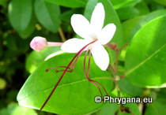

")

;
| Phrygana: la Nature en Crète principalement, mais aussi d'ailleurs au gré des rencontres... |
;
|
|
|
 |
|
| Eurygaster integriceps | Aceria tenuis | Clerodendrum inerme | Orobanche lavandulacea |
| Espèces: 624 --- Faune: 291 -- Flora: 330 -- Galles: 3 | |||||
| Nouveautés | |||||
| Flora: | Crinum asiaticum | Flora: | Cocos nucifera | Fauna: | Calotes versicolor |
| Flora: | Sphagneticola trilobata | Fauna: | Stromatium unicolor | Flora: | Codiaeum variegatum |
| Galle: | Lamoria anella | Flora: | Linum strictum subsp. spicatum | Fauna: | Sedum rubens |
| 21 août 2015 |
| Photographies © phrygana.eu |
| No part of this work may be used for
commercial purposes without the written permission of the author. Aucune utilisation commerciale n'est possible sans l'autorisation écrite de l'auteur. |